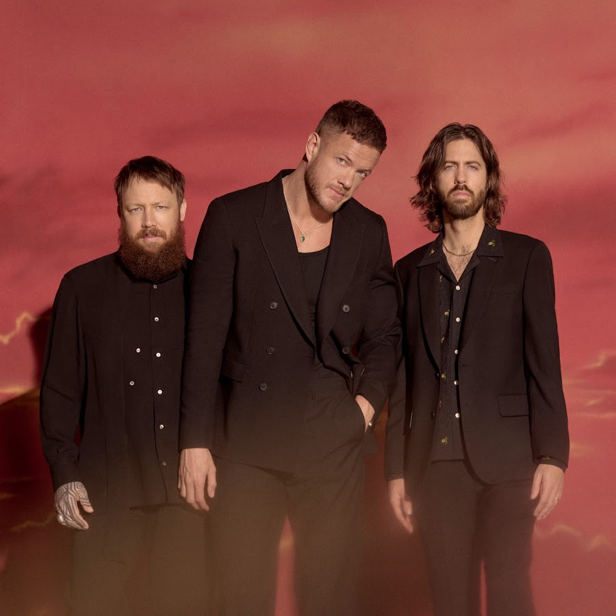
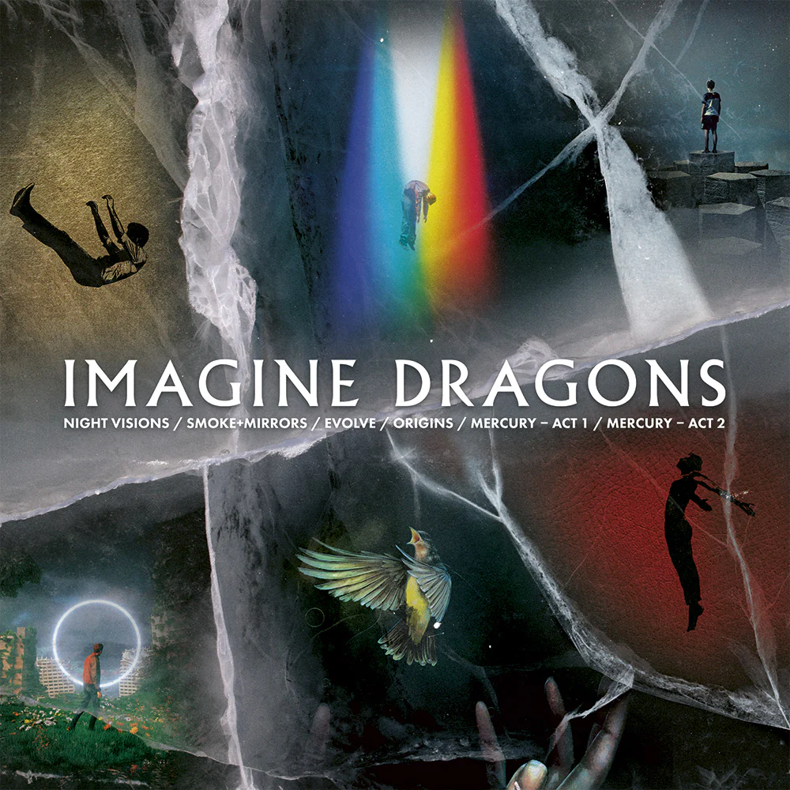
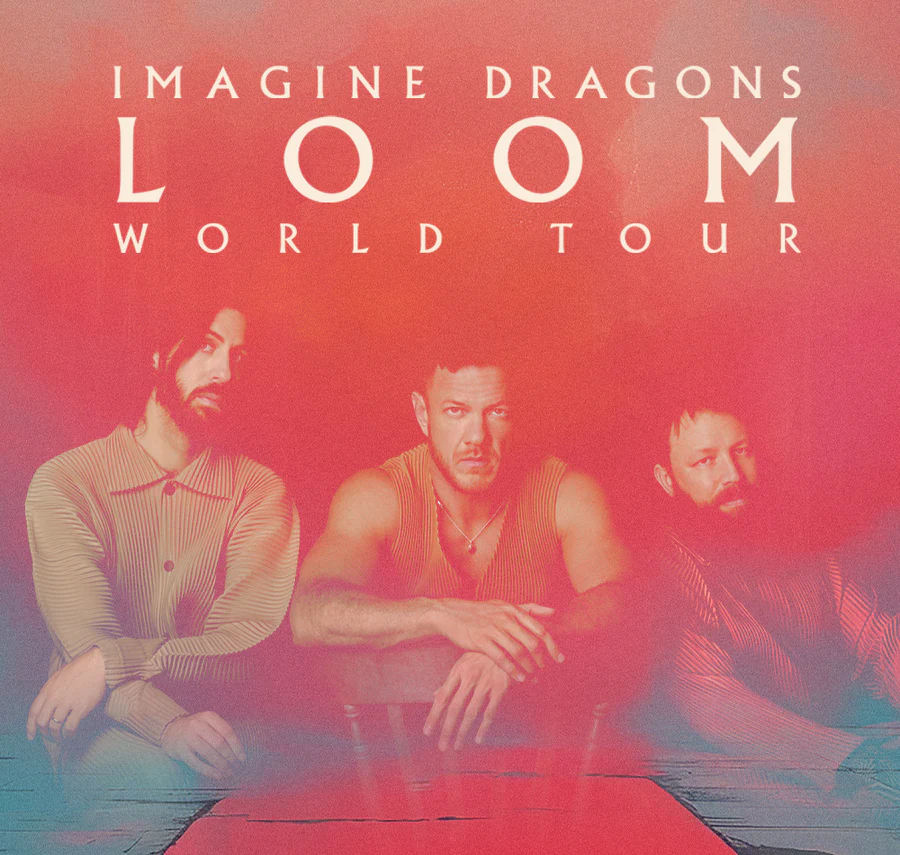
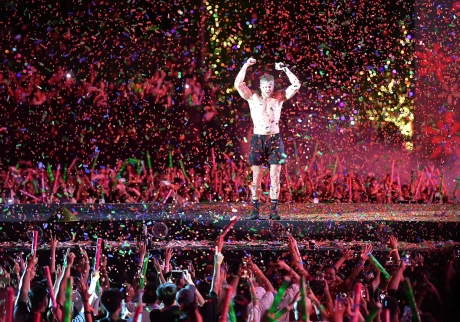

Díjak
Grammy, American Music Awards, Billboard Music Awards és sok más elismerés.

Az Imagine Dragons 2008-ban alakult Las Vegasban. Az együttes tagjai: Dan Reynolds (ének), Wayne Sermon (gitár), Ben McKee (basszusgitár) és Daniel Platzman (dob). Az áttörést a 2012-es "Night Visions" album és a "Radioactive" című dal hozta meg számukra.
Tudj meg többet
Az Imagine Dragons legismertebb albumai: Night Visions (2012), Smoke + Mirrors (2015), Evolve (2017), Origins (2018) és Mercury – Act 1 & 2 (2021, 2022). Slágereik közé tartozik a "Radioactive", "Demons", "Believer", "Thunder" és "Whatever It Takes".
Albumok megtekintése
Az Imagine Dragons híres energikus koncertjeiről és látványos színpadi produkcióiról. Világszerte turnéznak, és számos fesztiválon léptek már fel.
KoncertélményekA zenekar számos díjat nyert, köztük Grammy-díjat is. Az Imagine Dragons aktívan részt vesz jótékonysági tevékenységekben, például a Tyler Robinson Foundation támogatásában, amely a rákos gyermekeket segíti.
Grammy, American Music Awards, Billboard Music Awards és sok más elismerés.
Tyler Robinson Foundation: támogatás a rákos gyermekeknek és családjaiknak.

Világszerte milliók követik a zenekart, aktív közösségi média jelenlét.
Pop-rock, alternatív rock, indie és elektronikus elemek ötvözése.